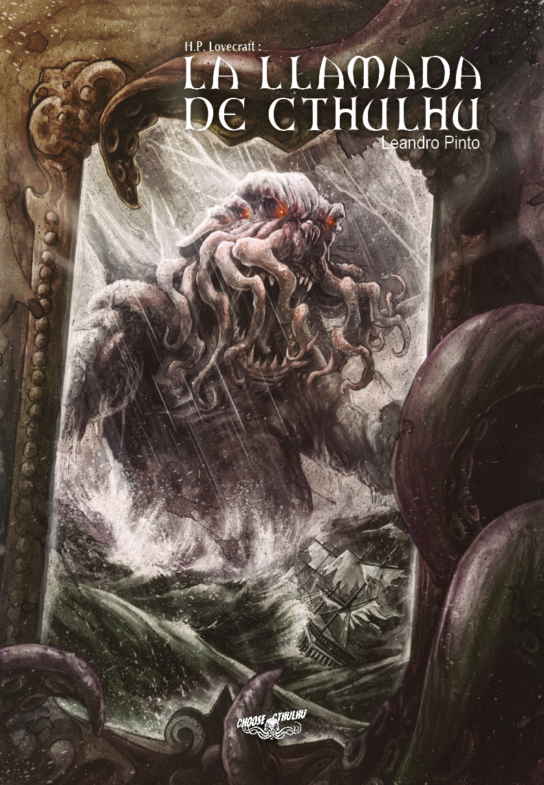
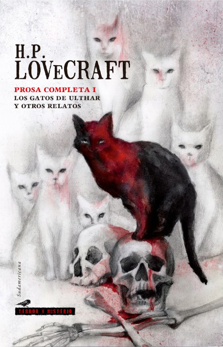

Lovecraft nunca llegó a vivir de sus obras, sus obras fueron conocidas a posteriori gracias al Círculo de Lovecraft que las difundió. Esto concuerda con esta citacíon dicha por él: "Un caballero no intenta darse a conocer, lo deja para los egoístas arribistas y mezquinos"
|  |
 |
El horror de Dunwichr |
| |
|